Accueil client
Métiers, nombre réel d’artisans et accès aux prochaines réservations.
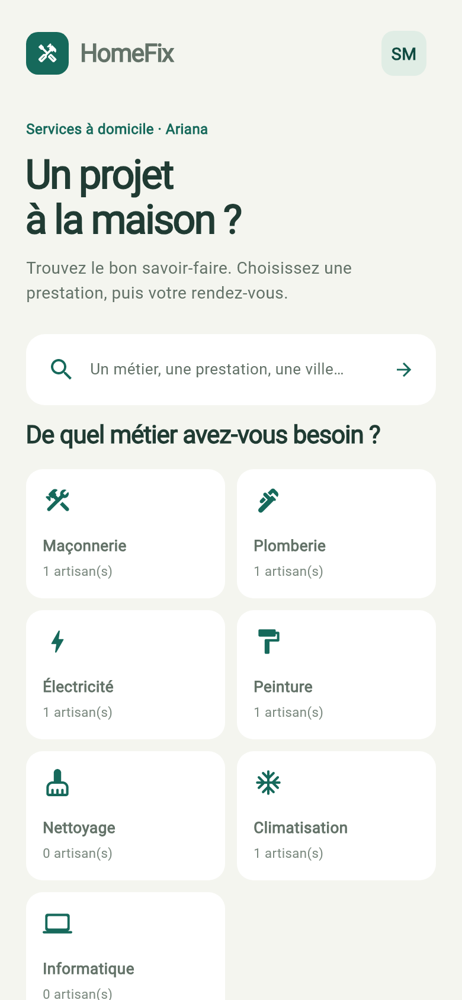
Prestations, réservations et réclamations reliées aux comptes client et professionnel. Le panel administrateur contient deux sections : Réclamations et Utilisateurs.
Ces images proviennent des vrais écrans et des données SQLite de démonstration. Cette galerie présente les widgets de la refonte du 10 novembre. Cette refonte a aussi été compilée et installée avec succès depuis le terminal Windows.
client@homefix.com
Pro : pro@homefix.com
Admin : admin@homefix.com
Mot de passe : HomeFix123!
Métiers, nombre réel d’artisans et accès aux prochaines réservations.

Recherche par métier, prestation ou ville, avec les tarifs des offres publiées.
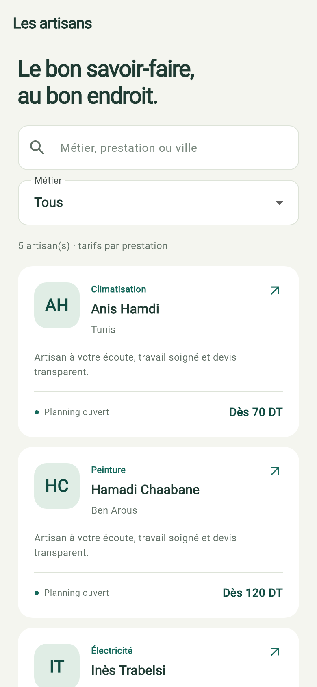
Prestations réservables individuellement, jours de travail et présentation du professionnel.
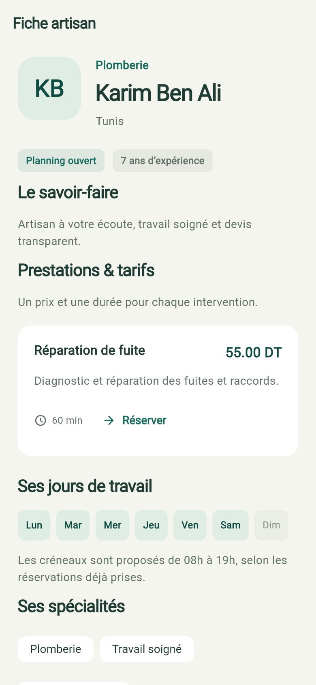
Un accès clair au compte, à la récupération du mot de passe et aux comptes de démonstration.
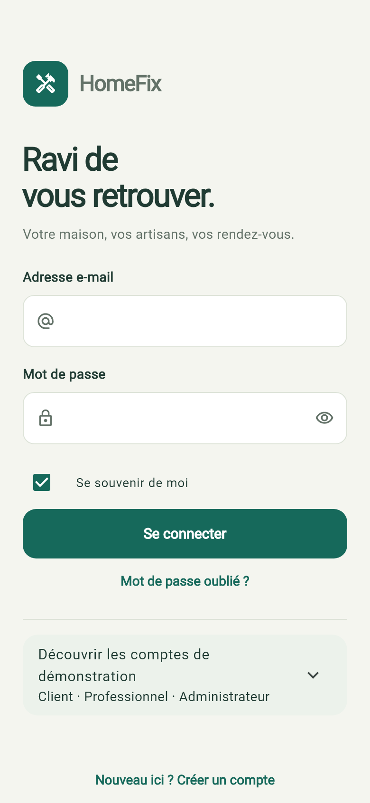
Demandes à confirmer, prestations publiées et prochains rendez-vous.
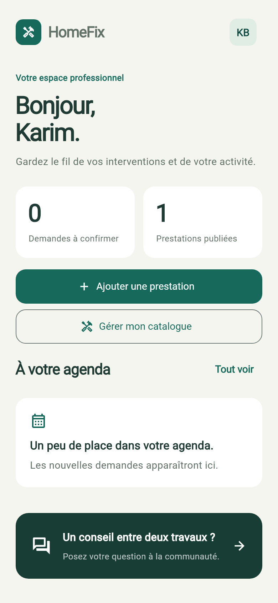
Les coordonnées, la présentation et le planning du compte connecté.
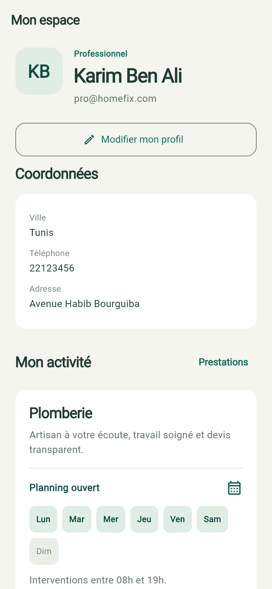
Coordonnées et présentation enregistrées dans SQLite.
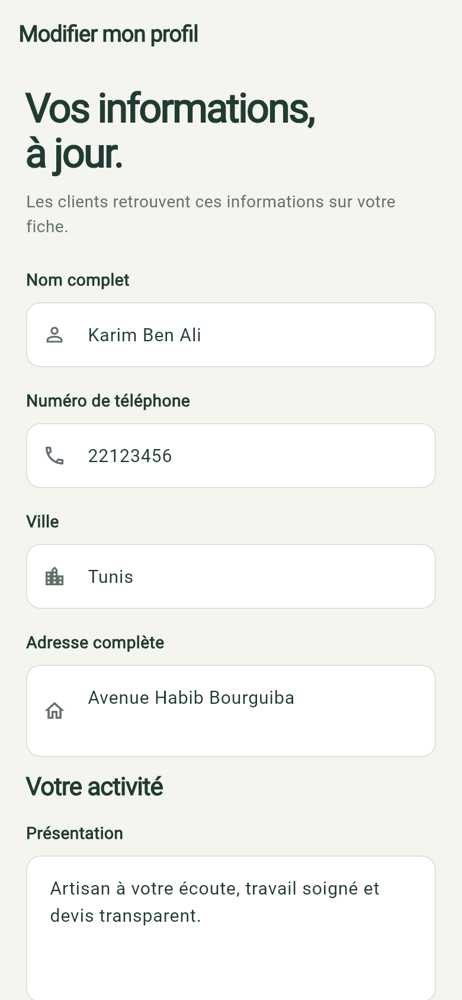
Les sept jours sont sélectionnables. Un interrupteur permet de mettre les nouvelles réservations en pause.
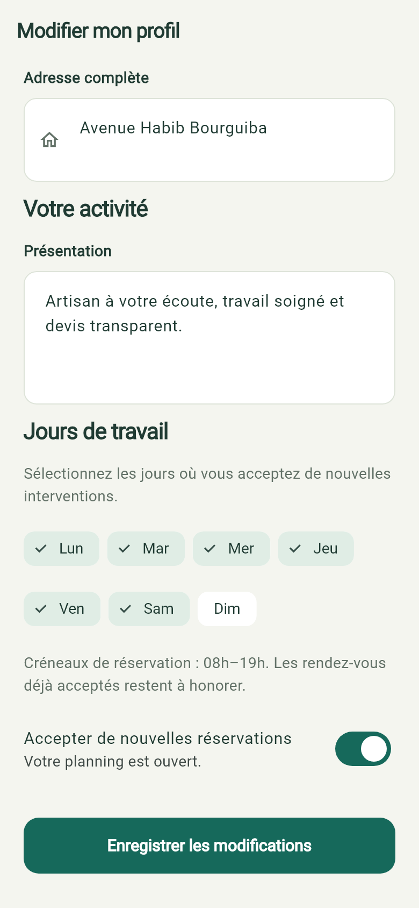
Recherche, filtre par statut et accès au dossier avec le client, le professionnel et la réservation concernés.
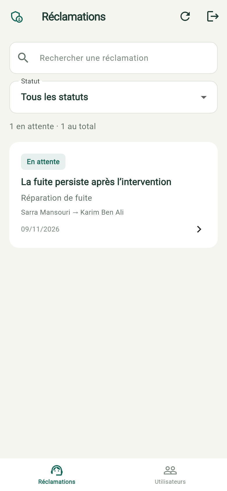
Recherche et filtre des comptes. Leur détail propose la suspension, la réactivation et la réinitialisation du mot de passe.
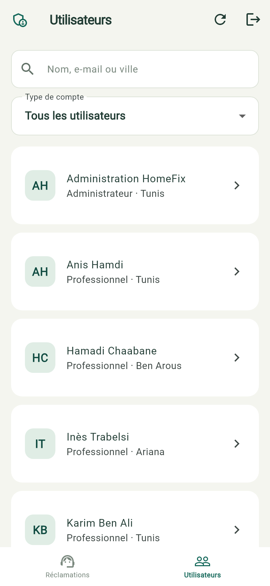
Description du problème, identité des deux participants, prestation et lien vers la réservation.
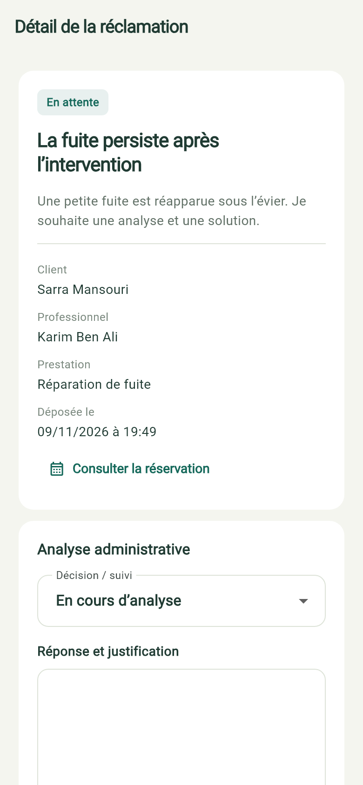
Passage en cours d’analyse, résolution ou rejet avec justification. Le traitement conserve son auteur et sa date.
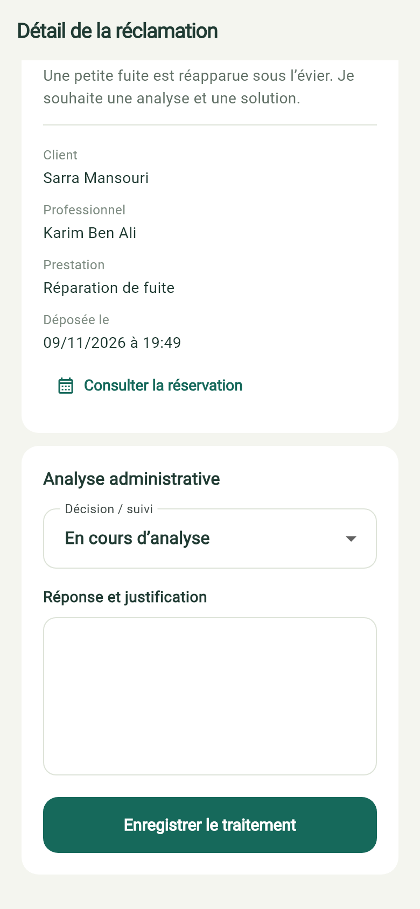
Catalogue personnel, prix et durée. Modification, retrait ou archivage des prestations déjà réservées.
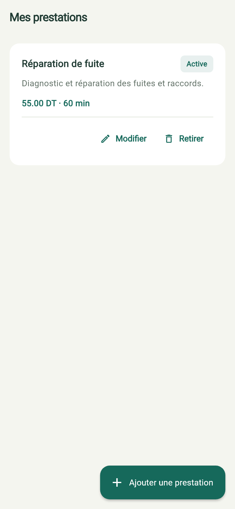
Titre, description, prix en dinars, durée et disponibilité. La prestation appartient au professionnel connecté.
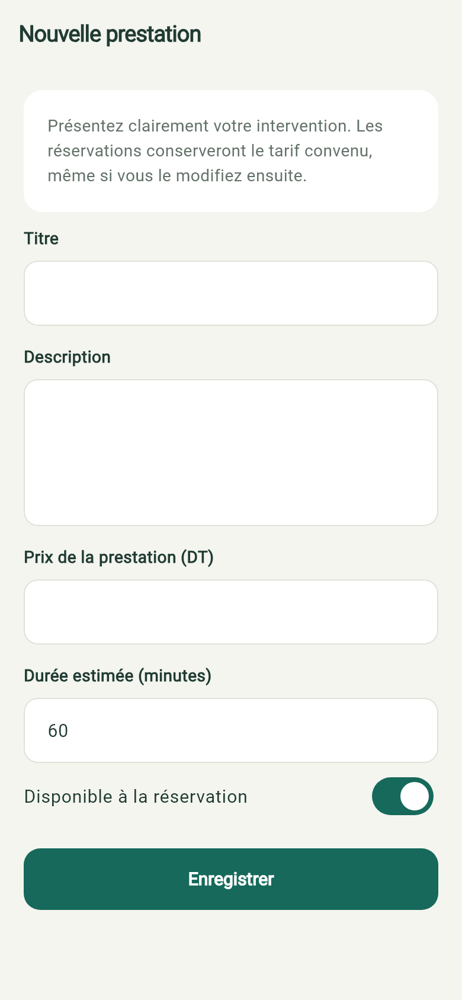
Prestation précise, tarif, professionnel, date, heure et adresse. Les conflits de réservation sont refusés.
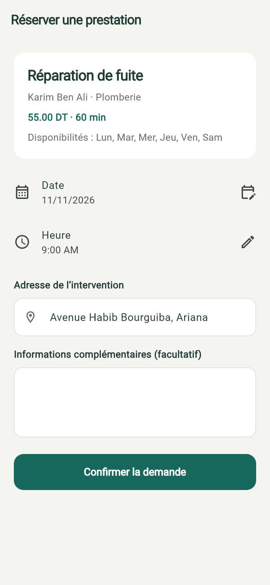
Les participants, le rendez-vous et le tarif convenu restent disponibles dans l’historique.
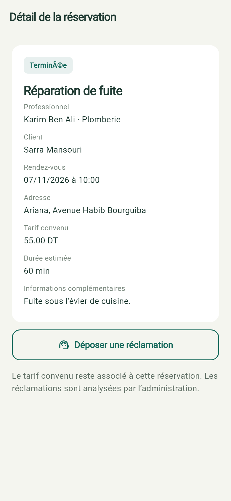
Réservation du client, objet et description. Les deux utilisateurs sont identifiés automatiquement.
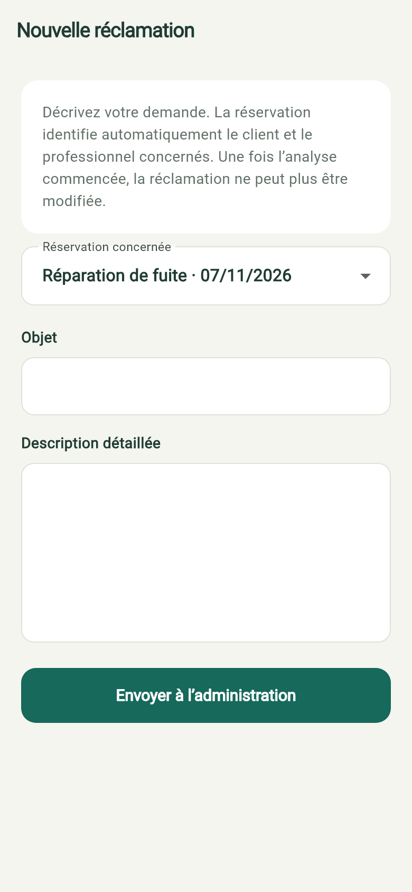